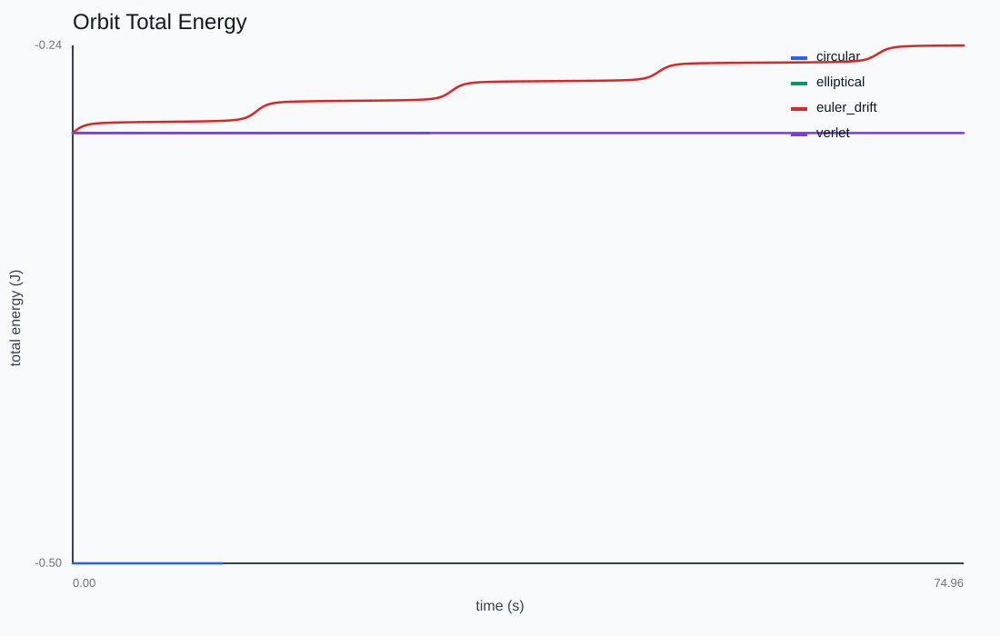

Kepler Orbits
How does a body move under inverse-square gravity, and which integrators keep the orbit closed?
Drag from the planet to aim and size its launch velocity, then release. Toggle the integrator: explicit Euler bleeds energy and spirals out, while velocity-Verlet keeps the orbit closed.

One constant, two invariants
The orbiting body needs only μ = GM. A central force conserves angular momentum, and a time-independent potential conserves energy — so any drift in either is pure numerical error. From the specific energy and angular momentum the lab reads back the semi-major axis, eccentricity, and period analytically.

Why Velocity-Verlet
Hamiltonian flow preserves a geometric structure (the symplectic form). A symplectic integrator preserves it too: energy then oscillates around the true value with no long-term drift, because the method exactly conserves a slightly perturbed "shadow" Hamiltonian. Explicit Euler and even RK4 have no such guarantee and drift over long horizons.
See it spiral
Run an ellipse with explicit Euler and it spirals outward — energy climbing — within a few orbits. Switch to velocity-Verlet (kick-drift-kick) and the same ellipse closes on itself indefinitely. Push the launch speed to √2 at r=1 and the orbit opens into a parabolic escape.
This chapter is drawn from the physics-lab study notes and renders. The longer write-ups and project essays live on the blog.